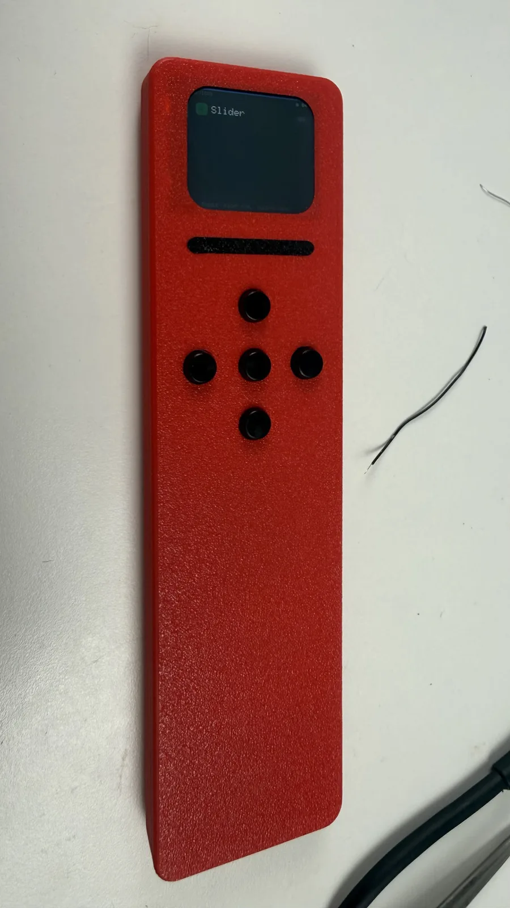
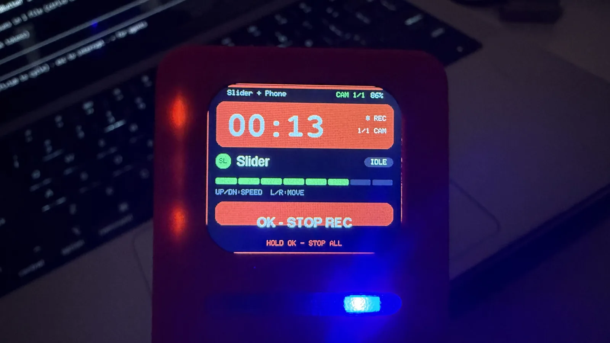
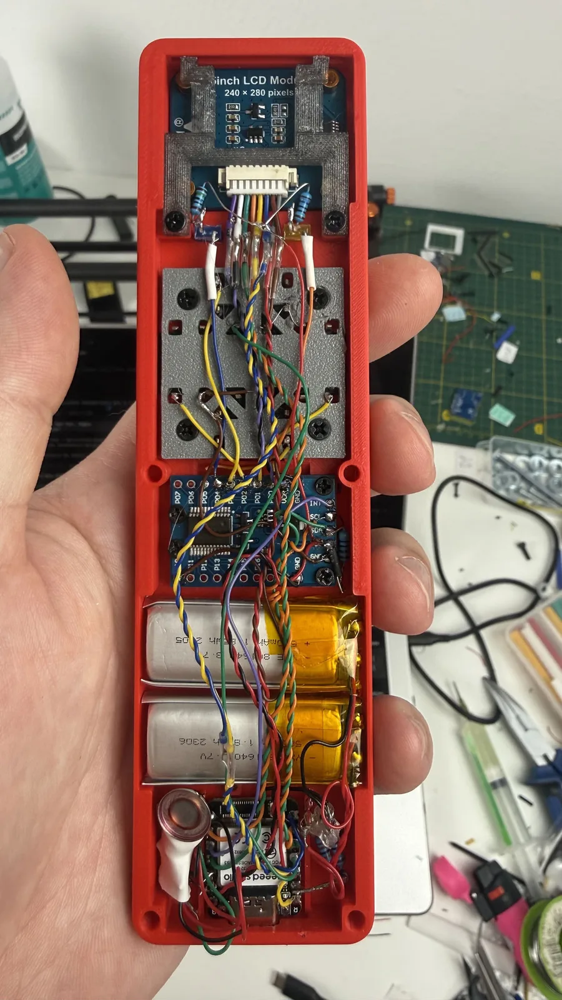
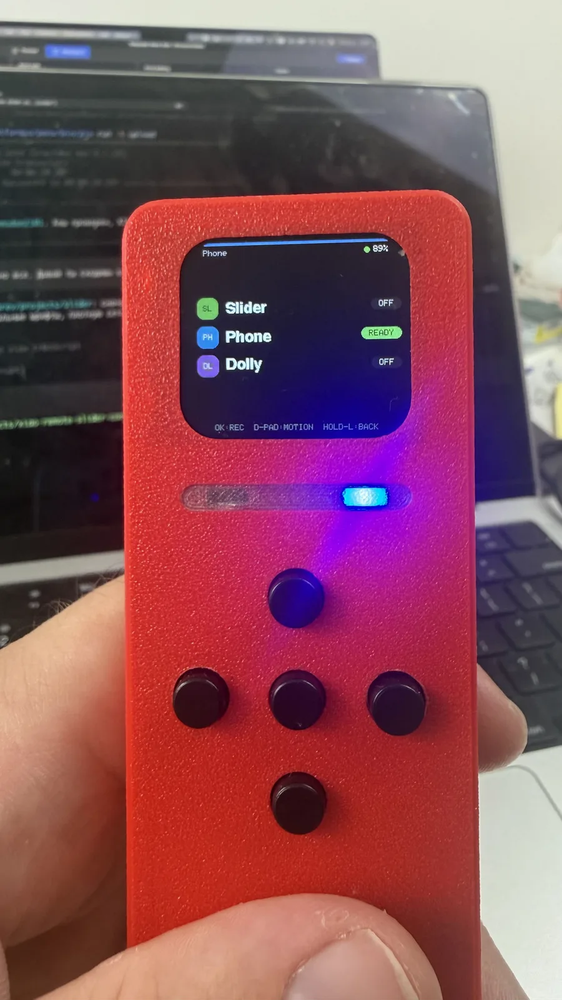

The remote's assembled, not without its quirks, but it works. Drives the slider and my Neewer DL-200 motorized dolly beautifully.


Working on the UI and stability now. Overall I got a real kick out of being able to start motion and recording with one button. Feels almost like magic.


Comments